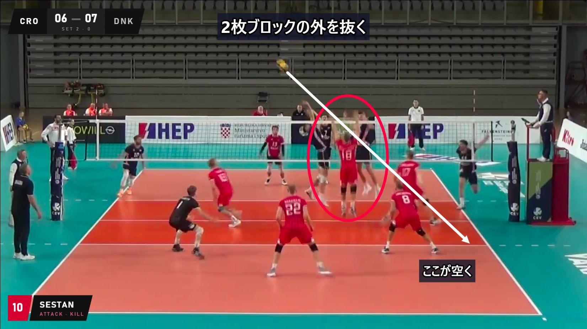
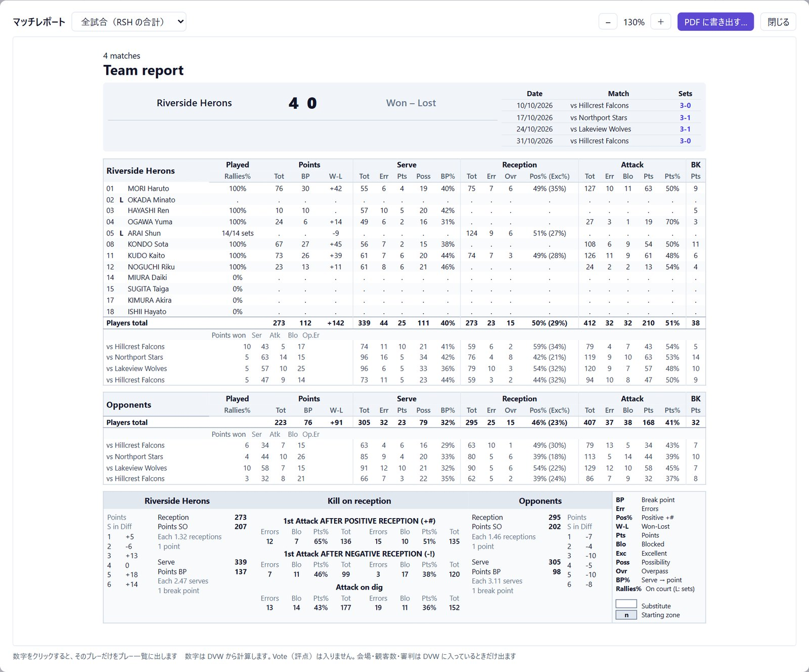
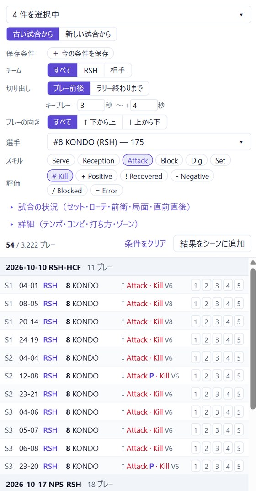
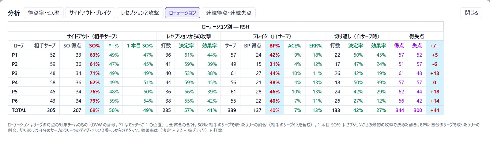
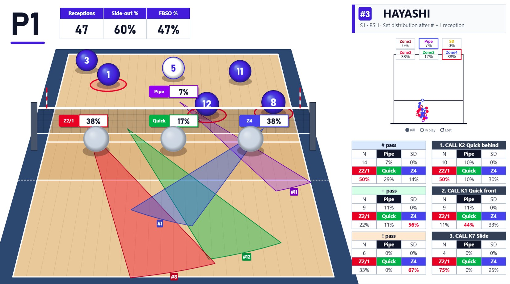

スカウトファイルから、ミーティングの画面まで。
- 読み込む試合動画と .dvw / .vsm を組にして倉庫へ。フォルダを選べば、日付とチームで自動で組にします。
- 探す選手・スキル・ローテ・ゾーン・コンビ・セッターコールで、全試合のプレーを絞り込み。よく使う条件は保存できます。
- 組むキー 1 つでプレーをシーンへ。プリセットなら動画まるごと 1 本。名前を付けたマーカーの下にドラッグで並べます。
- 見せるオーバーレイ・注釈・スライドで仕上げ、MP4・PNG・PDF に書き出し。
コート上のデータ
データを、試合のコートの上に。
コートの四隅を合わせる（自動で探すこともできる）と、スカウトのデータが試合動画の床に乗ります。どの表示も、見えているとおりに書き出しに入ります。


ほかにも、隅に出すディレクションチャート、セッターのトス配分、ゾーンの塗り、床に立つ円柱をコートに置けます。軌道は説明用です。スカウトの時刻は秒単位なので、実際のボールとは少しずれます。
ミーティング用の動画
見せたいプレーを、見せたい形で。
動画にメッセージを書き込み、試合の状況がひと目で分かるように。プレビューで見えているものが、そのまま MP4 になります。


自分で足すもの
- 注釈
- テキスト、矢印と曲線の矢印、図形、フリーハンド、丸付き数字、画像や PDF。それぞれに表示時間とフェード。
- タイトルカード
- 動画・シーン・マーカーごとに。選手の写真やチームのロゴも入れられます。
- スライド
- 静止画、PDF のページ、データスライドをクリップの間に。
- タイミング
- クリップごとに IN / OUT を詰め、スローや一時停止も。
データが入れるもの
- 選手テロップ
- 背番号・名前・スキル・評価。写真パックがあれば選手の写真も。
- スコアボード
- そのラリーの点数とセット。デザインは 4 種類。
- サーブ速度
- ヒットとタッチを打つと、サーブの速さをクリップに表示。
- チャプター
- MP4 にシーンやマーカーごとのチャプター。YouTube 用のチャプターも書き出せます。
レポートと分析
数字から、ワンクリックで映像へ。
試合ごとの A4 1 枚のマッチレポートと、全試合を合わせたチームレポート。数字をクリックすると、プレー一覧がそのプレーだけになり、すぐに見たりシーンに入れたりできます。配る用に PDF にも書き出せます。



データスライド
データから、スライドを。
チームを選ぶと、アプリがスライドを描きます。文字や写真はあとから動かせ、矢印や図形も足せます。動画の中で流すことも、PNG や PDF に書き出すこともできます。



プリセット
動画 1 本を、ひと手間で。
- サイドアウトローテごとにシーン。中はレセプションの質・選手・ゾーン・結果で分けられます。
- サーブサーブした選手ごとにシーン。マーカーはレセプション評価別・ゾーン別・時系列。
- ブロックとアタックミドル別やローテ別、アタッカー別・ポジション別・アタックコード別。
- 作り直し動画は作り方を覚えています。試合を選び直して、もう一度作れます。
そのほかの機能
- 保存条件絞り込みの条件に名前を付けて保存し、クリックで呼び出し。
- 試合を倉庫にまとめる一度取り込めば、同じ試合からいくつでもプロジェクトを作れます。
- 選手写真パック写真を一度入れれば、テロップ・タイトルカード・スライドで使えます。
- 作業はいつでも直せる自動で保存。元に戻す・やり直すにも対応。
- 日本語と英語設定で表示言語を切り替え。
- 自動アップデート新しいバージョンを裏でダウンロードし、再起動で更新。
SyncScout シリーズ
SyncScout で見つけ、Video Editor で伝える。
| SyncScout | SyncScout Video Editor | |
|---|---|---|
| 役割 | 映像を探して見る | 見せたい動画・スライド・レポートを仕上げる |
| 動く場所 | Web | 自分のパソコン（オフライン） |
| 素材 | YouTube の動画とスカウトファイル | 手元の動画ファイルと .dvw / .vsm |
| 用途 | チームでの共有と視聴 | ミーティングと、スタッフが見せたいもの |
自分の動画とスカウトファイルで試す
Windows 版を公開中。Mac 版は準備中です。